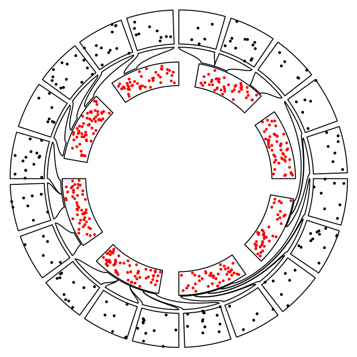
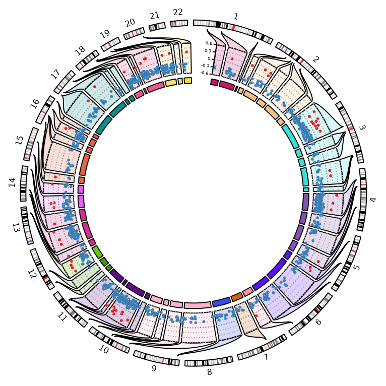

13 Nested zooming#
13.1 Basic idea#
In Zooming of sectors, we placed zoomed sectors on the same ring as the unzoomed sectors. That approach works well when only a few regions need zooming, but breaks down when there are dozens of target intervals. Nested zooming solves this by placing the zoomed intervals into a second concentric circular plot linked to the original ring.
To illustrate the workflow, we generate a synthetic dataset with 8
categories (a through h), partition each
[0, 1] interval into 0.2-wide bins, and randomly select 20
bins to zoom:
import numpy as np
import pandas as pd
from circlize_py import CELL_META, circos, mm_y, rand_color
rng = np.random.default_rng(123)
letters8 = list("abcdefgh")
df = pd.DataFrame({
"cate": rng.choice(letters8, size=400, replace=True),
"x": rng.uniform(0.0, 1.0, size=400),
"y": rng.uniform(0.0, 1.0, size=400),
})
df = df.sort_values(["cate", "x"]).reset_index(drop=True)
cuts = pd.cut(df["x"], bins=[0.0, 0.2, 0.4, 0.6, 0.8, 1.0], include_lowest=False)
df["start"] = cuts.apply(lambda iv: float(iv.left)).astype(float)
df["end"] = cuts.apply(lambda iv: float(iv.right)).astype(float)
df["interval_x"] = [f"({s:g},{e:g}]" for s, e in zip(df["start"], df["end"])]
df["name"] = df["cate"] + ":" + df["interval_x"]
chosen = set(rng.choice(df["name"].unique(), size=20, replace=False))
df2 = df[df["name"].isin(chosen)].copy()
correspondance = df2[["cate", "start", "end", "name"]].copy()
correspondance["start_2"] = df2["start"].to_numpy()
correspondance["end_2"] = df2["end"].to_numpy()
correspondance = correspondance.drop_duplicates().reset_index(drop=True)
zoom_sector = df2[["name", "start", "end", "cate"]].drop_duplicates().reset_index(drop=True)
zoom_data = df2[["name", "x", "y"]].reset_index(drop=True)
data = df[["cate", "x", "y"]].copy()
sector = pd.DataFrame({"cate": letters8, "start": 0.0, "end": 1.0})Inspecting the resulting tables: sector stores the
original sector names and ranges:
print(sector.head(4)) cate start end
0 a 0.0 1.0
1 b 0.0 1.0
2 c 0.0 1.0
3 d 0.0 1.0data holds the points plotted in the original track:
print(data.head(4)) cate x y
0 a 0.040303 0.294537
1 a 0.057047 0.942172
2 a 0.075635 0.866290
3 a 0.109245 0.746427zoom_sector lists each sampled interval as an
independent zoomed sector:
print(zoom_sector.head(4)) name start end cate
0 a:(0.2,0.4] 0.2 0.4 a
1 a:(0.4,0.6] 0.4 0.6 a
2 a:(0.6,0.8] 0.6 0.8 a
3 a:(0.8,1] 0.8 1.0 azoom_data contains the subset of points falling inside
those zoomed bins:
print(zoom_data.head(4)) name x y
0 a:(0.2,0.4] 0.203087 0.353274
1 a:(0.2,0.4] 0.221691 0.902333
2 a:(0.2,0.4] 0.222258 0.629293
3 a:(0.2,0.4] 0.244912 0.040484Finally, correspondance is a 6-column
DataFrame mapping each interval in the outer plot
(cate, start, end) to its zoomed
sector in the inner plot (name, start_2,
end_2):
print(correspondance.head(4)) cate start end name start_2 end_2
0 a 0.2 0.4 a:(0.2,0.4] 0.2 0.4
1 a 0.4 0.6 a:(0.4,0.6] 0.4 0.6
2 a 0.6 0.8 a:(0.6,0.8] 0.6 0.8
3 a 0.8 1.0 a:(0.8,1] 0.8 1.0Nested zooming composes two independent circular plot
functions—f1() for the outer layout and f2()
for the inner layout—and passes both along with
correspondance to circos.nested():
def f1():
circos.par(gap_degree=10)
circos.initialize(sector.iloc[:, 0], xlim=sector.iloc[:, 1:3])
circos.track(
data.iloc[:, 0],
x=data.iloc[:, 1],
y=data.iloc[:, 2],
ylim=(0.0, 1.0),
panel_fun=lambda x, y: circos.points(x, y, pch=16, cex=0.5, col="red"),
)
def f2():
circos.par(gap_degree=2, cell_padding=(0.0, 0.0, 0.0, 0.0))
circos.initialize(zoom_sector.iloc[:, 0], xlim=zoom_sector.iloc[:, 1:3].to_numpy())
circos.track(
zoom_data.iloc[:, 0],
x=zoom_data.iloc[:, 1],
y=zoom_data.iloc[:, 2],
panel_fun=lambda x, y: circos.points(x, y, pch=16, cex=0.5),
)
circos.nested(f1, f2, correspondance)
By default, f2() is placed inside f1() and
its start_degree is rotated automatically to minimize
connection distances. To place the zoomed ring on the
outside, swap f1 and f2 and
swap the first three and last three columns of
correspondance (Figure 13.2):
circos.nested(f2, f1, correspondance.iloc[:, [3, 4, 5, 0, 1, 2]])
Keep four constraints in mind when calling
circos.nested():
- Both plots must span the full circle (i.e.,
canvas_xlim=(-1, 1)andcanvas_ylim=(-1, 1)inf2()). - If you customize
canvas_xlimandcanvas_yliminf1(), keep them symmetric and square (|xlim| == |ylim|). - By default (
adjust_start_degree=True),circos.nested()optimizes the rotation off2(), so do not setcircos.par(start_degree=...)insidef2()unlessadjust_start_degree=False. - Do not call
circos.clear()insidef1()orf2()—circos.nested()inspects both layouts and clears state internally.
Because f1() and f2() are ordinary plotting
functions, you can enrich them with highlighted intervals, sector
labels, and matching ribbon colors (Figure 13.3):
sector_col = dict(zip(letters8, rand_color(8, transparency=0.5, seed=123)))
def f1():
circos.par(gap_degree=10, points_overflow_warning=False)
circos.initialize(sector.iloc[:, 0], xlim=sector.iloc[:, 1:3])
def panel_f1(x, y):
si = CELL_META.sector_index
sub_corr = correspondance[correspondance.iloc[:, 0] == si]
for _, row in sub_corr.iterrows():
circos.rect(
float(row.iloc[1]),
CELL_META.cell_ylim[0],
float(row.iloc[2]),
CELL_META.cell_ylim[1],
col=sector_col[si],
border=sector_col[si],
)
circos.points(x, y, pch=16, cex=0.5)
circos.text(
CELL_META.xcenter,
CELL_META.ylim[1] + mm_y(2),
si,
niceFacing=True,
adj=(0.5, 0.0),
)
circos.track(
data.iloc[:, 0],
x=data.iloc[:, 1],
y=data.iloc[:, 2],
ylim=(0.0, 1.0),
panel_fun=panel_f1,
)
def f2():
circos.par(gap_degree=2, cell_padding=(0.0, 0.0, 0.0, 0.0))
circos.initialize(zoom_sector.iloc[:, 0], xlim=zoom_sector.iloc[:, 1:3].to_numpy())
circos.track(
zoom_data.iloc[:, 0],
x=zoom_data.iloc[:, 1],
y=zoom_data.iloc[:, 2],
panel_fun=lambda x, y: circos.points(x, y, pch=16, cex=0.5),
bg_col=[sector_col[c] for c in zoom_sector["cate"]],
track_margin=(0.0, 0.0),
)
circos.nested(
f1,
f2,
correspondance,
connection_col=[sector_col[c] for c in correspondance.iloc[:, 0]],
)
13.2 Visualization of DMRs from tagmentation-based WGBS#
Tagmentation-based
whole-genome bisulfite sequencing (T-WGBS) profiles targeted subsets
of the methylome. Here we visualize differentially methylated regions
(DMRs) detected in tagment regions across human autosomes using the
bundled "tagments_WGBS_DMR" dataset:
tagments: sequenced genomic intervals.DMR1: DMR methylation differences (methDiff) inside those tagment regions.correspondance: 6-column mapping between genome coordinates and tagment sectors.
from circlize_py import add_transparency, get, load_extdata, mm_h
wb = load_extdata("tagments_WGBS_DMR")
tagments = wb["tagments"]
DMR1 = wb["DMR1"]
correspondance = wb["correspondance"]
print(tagments.head(4)) tagments start end chr
0 chr1-44876009-45016546 44876009 45016546 chr1
1 chr1-90460304-90761641 90460304 90761641 chr1
2 chr1-211666507-211692757 211666507 211692757 chr1
3 chr2-46387184-46477385 46387184 46477385 chr2print(DMR1.head(4)) chr start end methDiff
0 chr1-44876009-45016546 44894352 44894643 -0.281289
1 chr1-44876009-45016546 44902069 44902966 -0.333117
2 chr1-90460304-90761641 90535428 90536046 -0.355070
3 chr1-90460304-90761641 90546991 90547262 -0.431081print(correspondance.head(4)) chr start end tagments start.1 end.1
0 chr1 44876009 45016546 chr1-44876009-45016546 44876009 45016546
1 chr1 90460304 90761641 chr1-90460304-90761641 90460304 90761641
2 chr1 211666507 211692757 chr1-211666507-211692757 211666507 211692757
3 chr2 46387184 46477385 chr2-46387184-46477385 46387184 46477385In Figure 13.4, f1() renders the outer whole-genome
ideogram (chr1–chr22) and f2()
renders the zoomed tagment regions in the inner ring with a y-axis and
chromosome color bar:
chrs_22 = [f"chr{i}" for i in range(1, 23)]
chr_bg_color = dict(zip(chrs_22, rand_color(22, transparency=0.8, seed=77)))
def f1():
circos.par(gap_after=2, start_degree=90)
circos.initializeWithIdeogram(
chromosome_index=chrs_22,
plot_type=("ideogram", "labels"),
ideogram_height=0.03,
)
def f2():
circos.par(
cell_padding=(0.0, 0.0, 0.0, 0.0),
gap_after=[1] * (len(tagments) - 1) + [10],
)
circos.genomicInitialize(tagments, plot_type=None)
bg_cols = [chr_bg_color[c] for c in tagments["chr"]]
def panel_dmr(region, value, **kwargs):
for h in np.arange(-0.6, 0.61, 0.2):
circos.lines(CELL_META.cell_xlim, [h, h], lty=3, col="#AAAAAA")
circos.lines(CELL_META.cell_xlim, [0.0, 0.0], lty=3, col="#888888")
cols = np.where(value.iloc[:, 0] > 0, "#E41A1C", "#377EB8").tolist()
circos.genomicPoints(region, value, col=cols, pch=16, cex=0.5)
circos.genomicTrack(
DMR1,
ylim=(-0.6, 0.6),
panel_fun=panel_dmr,
bg_col=bg_cols,
track_margin=(0.02, 0.0),
)
circos.yaxis(
side="left",
at=np.arange(-0.6, 0.61, 0.3),
sector_index=get.all.sector.index()[0],
labels_cex=0.4,
)
circos.track(
ylim=(0.0, 1.0),
track_height=mm_h(2),
bg_col=add_transparency(bg_cols, 0.0),
)
circos.nested(
f1,
f2,
correspondance,
connection_col=[chr_bg_color[c] for c in correspondance.iloc[:, 0]],
)